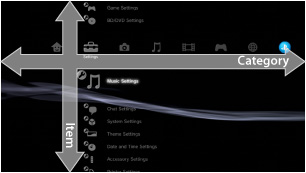
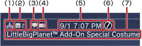
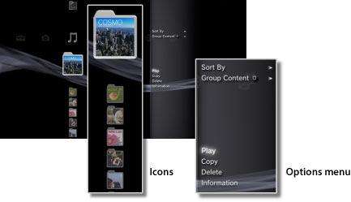
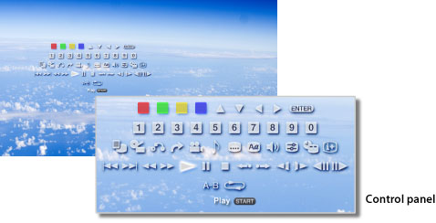

About the XMB™ menu > About the XMB™ (XrossMediaBar) menu
About the XMB™ (XrossMediaBar) menu
Using the XMB™ menu
The PS3™ system includes a user interface called XMB™ (XrossMediaBar). The horizontal row shows system features in categories, and the vertical column shows items that can be performed under each category.

| Directional buttons | Select a category or item. |
|---|---|
 button button |
Confirm the selected item. |
 button button |
Cancel an operation. |
 button button |
View the options menu / control panel. |
| PS button | View the XMB™ menu. |
Playing content
From the XMB™ menu, select the content on the disc or storage media, and then press the button. To stop playback, press the button.
Hint
An appropriate USB adaptor (not included) is required to use storage media with some models of the PS3™ system.
Information panel
Using the information panel that is displayed on the upper right of the screen, you can view information such as the number of Friends who are online, notice about new messages and the latest information that is available under [What's New].

(1) |
Avatar * |
|---|---|
(2) |
Number of Friends who are online * |
(3) |
Information about new text chat * |
(4) |
Information about new messages |
(5) |
Date and time |
(6) |
Busy icon |
(7) |
Information available under [What's New] |
* Displayed only when signed in to PSNSM.
Using the options menu
Select an icon from the XMB™ menu, and then press the button to display the options menu. The options menu can be displayed or hidden by pressing the button.

Options menu items
Options menu items vary depending on the category.
| Play / Start / View | Play content. |
|---|---|
| Eject Disc | Eject the disc. |
| Delete | Delete content. |
| Copy | Copy content to the system storage or to storage media.*1 |
| Information | View information on the content. Some information such as the name can be changed. |
| Add to Playlist | Add content to a playlist. |
| Display All | View all folders saved on storage media or a USB mass storage device.*1 |
| Sort By | Sort content items by name, date, etc. |
| Group Content | Change the grouping method to group by album, format or other options.*2 |
| Delete Multiple | Select multiple content items and delete all at once. |
| Copy Multiple | Select multiple content items and copy all at once. |
| *1 |
An appropriate USB adaptor (not included) is required to use storage media with some models of the PS3™ system. |
|---|---|
| *2 |
Content that does not have the information required for grouping is grouped into an [Unknown] folder. Some content may not be grouped. |
Using the control panel
During content playback, press the button to display the control panel. The control panel can be displayed or hidden by pressing the button. Control panel items vary depending on the content being played.

Using multiple features at the same time
Users can enjoy multiple features at the same time. For example, you can view images under  (Photo) or access the Internet under
(Photo) or access the Internet under  (Network) while playing music under
(Network) while playing music under  (Music).
(Music).
Example: Viewing images under (Photo) while playing music under (Music)
1. |
Play music under |
|---|---|
2. |
Press the PS button. |
3. |
Select the images that you want to view under |
Hints
- You cannot play (Music) content with other features during Super Audio CD playback or when
 (Settings) >
(Settings) >  (Music Settings) > [Output Frequency] is set to [44.1 / 88.2 / 176.4 kHz].
(Music Settings) > [Output Frequency] is set to [44.1 / 88.2 / 176.4 kHz]. - Depending on the type of content being played, some features that usually can be played at the same time may not be available.
Notice
Super Audio CDs cannot be played on some PS3™ systems. For details, refer to [Types of Playable Discs].